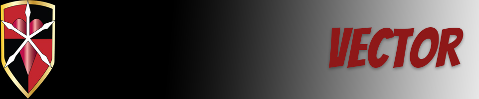

I knew that Illustrator would be one of the big programs that I would be using in the future but I definitely was not expecting the interface of the pen tool. It's definitely not like regular drawing and sketching but I am understanding the logic behind it and I've definitely started liking the pen tool more and vector graphics in general. For my Vector final, I took a design from the anime Bleach and inverted the colors and kind of tried to imagine myself as the character. I would have spent more time editing the character and actually adding more of my own creative input but I wasn't yet confident in my ability in Illustrator. I hope to improve my skills in the future and actually fully design my own characters.
Home | Raster | Vector | Animate | Print | Contact